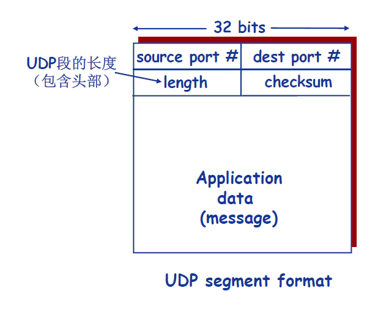
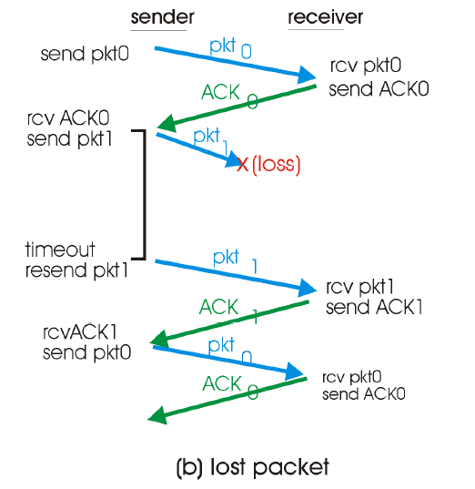
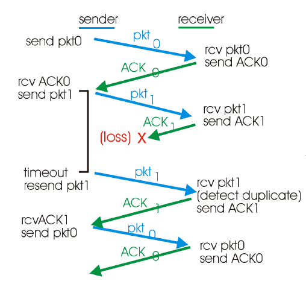
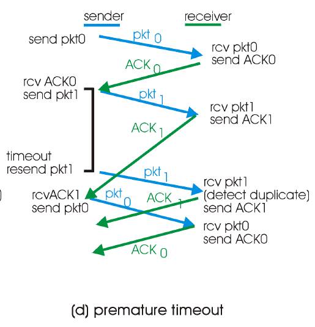
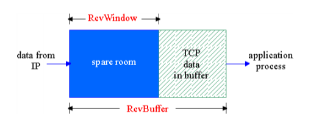
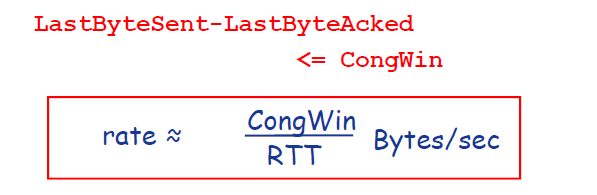
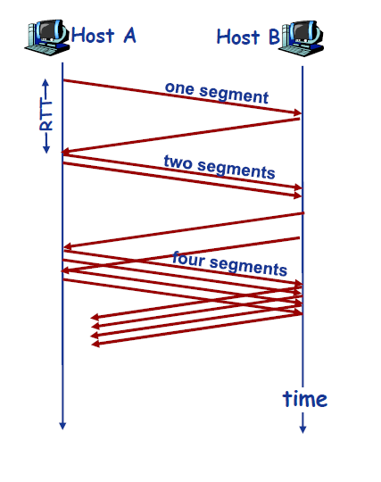

前言
传输层服务的基本理论和基本机制：
掌握Internet的传输层协议：
- UDP：无连接传输服务
- TCP：面向连接的传输服务
- TCP拥塞控制
传输层服务和协议
传输层协议为运行在不同Host(主机)上的进程提供了一种逻辑通信机制。
端系统运行传输层协议：
- 发送方：将应用递交的消息分成一个或多个segment，并向下传给网络层。
- 接收方：将收到的segment组装成消息，并上交给应用层。
传输层可以为应用提供多种协议：
- Internet上的TCP
- Internet上的UDP
网络层 vs 传输层
网络层：提供主机之间的额逻辑通信机制。
传输层：提供应用进程之间的逻辑通信机制
- 位于网络层之上
- 依赖于网络层服务
- 对网络层服务进行(可能的)增强
Internet传输层协议
- 可靠、按序的交付服务(TCP)
- 拥塞控制
- 流量控制
- 连接建立
- 不可靠的交付服务(UDP)
- 基于“尽力而为”的网络层，没有可靠性方面的拓展
- 两种服务均不保证
- 延迟
- 带宽
多路分用和多路复用
如果某层的一个协议对应直接上层的多个协议/实体，则需复用/分用。
分用如何工作：
主机接收到IP数据报
- 每个数据报携带源IP地址、目的IP地址。
- 每个数据报携带一个传输层的段(Segment）。
- 每个段携带源端口号和目的端口号。
主机收到Segment之后，传输层协议提取IP地址和端口号信息，将Segment导向相应的Socket。
- TCP做更多处理

无连接分用：
- 利用端口号创建Socket
1
2
3
4DatagramSocket mySocket1 = new
DatagramSocket(99111);
DatagramSocket mySocket2 = new
DatagramSocket(99222); - UDP的Socket用二元组标识(目的IP地址，目的端口号)
- 主机收到UDP段后,检查段中的目的端口号
- 将UDP段导向绑定在该端口号的Socket
- 来自不同源IP地址和/或源端口号的IP数据包被导向同一个Socket
面向连接的分用：
- TCP的Socket用四元组标识
- 源IP地址
- 源端口号
- 目的IP地址
- 目的端口号
- 接收端利用所有的四个值将Segment导向合适的Socket
- 服务器可能同时支持多个TCP Socket
- 每个Socket用自己的四元组标识
- Web服务器为每个客户端开不同的Socket
UDP
- 基于Internet IP协议
- 复用/分用
- 简单的错误校验
- “Best effort”服务，UDP段可能
- 丢失
- 非按序到达
- 无连接
- UDP发送方和接收方不需要握手
- 每个UDP段的处理独立于其他段
- 无需建立连接(减少延迟)
- 实现简单：无需维护连接状态
- 头部开销少
- 没有拥塞控制：应用更好的控制发送时间和速率
- 常用于流媒体应用
- UDP还用于
- DNS
- SNMP
- 在UDP实现可靠传输
- 在应用层添加可靠性机制
- 应用特定的错误恢复机制

UDP校验和(checksum)
目的： 检测UDP段在传输中是否发生错误。
发送方：
- 将段的内容视为16-bit整数
- 校验和计算：计算所有整数的和，进位加在和的后面，将得到的值按位求反，得到校验和
- 发送方将校验和放入校验和字段
接收方：
- 计算所收到段的校验和
- 将其与校验和字段进行对比
- 不相等：检测出错误
- 相等：没有检测出错误（但可能有错误）
可靠数据传输原理
可靠传输：不丢、不乱、不错

rdt2.0
底层信道可能翻转分组中的位(bit)
- 利用校验和检测位错误
如何从错误中恢复？
- 确认机制(Acknowledgements, ACK): 接收方显式地告知发送方分组已正确接收
- NAK:接收方显式地告知发送方分组有错误
- 发送方收到NAK后，重传分组
- 基于这种重传机制的rdt协议称为ARQ(Automatic Repeat reQuest)协议
Rdt 2.0中引入的新机制
- 差错检测
- 接收方反馈控制消息: ACK/NAK
- 重传
rdt2.1和2.2
rdt2.1
如果ACK/NAK消息发生错误/被破坏(corrupted)会怎么样？
- 为ACK/NAK增加校验和，检错并纠错
- 发送方收到被破坏ACK/NAK时不知道接收方发生了什么，添加额外的控制消息
- 如果ACK/NAK坏掉，发送方重传
- 不能简单的重传：产生重复分组
如何解决重复分组问题？
- 序列号(Sequence number): 发送方给每个分组增加序列号
- 接收方丢弃重复分组
rdt2.2：无NAK消息协议
- 与rdt 2.1功能相同，但是只使用ACK
- 如何实现？
- 接收方通过ACK告知最后一个被正确接收的分组
- 在ACK消息中显式地加入被确认分组的序列号
- 发送方收到重复ACK之后，采取与收到NAK消息相同的动作
- 重传当前分组
rdt3.0
如果信道既可能发生错误，也可能丢失分组，怎么办？
“校验和+ 序列号+ ACK + 重传”够用吗？
方法：发送方等待“合理”时间
- 如果没收到ACK，重传
- 如果分组或ACK只是延迟而不是丢了
- 重传会产生重复，序列号机制能够处理
- 接收方需在ACK中显式告知所确认的分组
- 需要定时器



滑动窗口协议
面向连接的传输协议——TCP
TCP概述
- 点对点
- 一个发送方一个接收方
- 可靠的、按序的字节流
- 流水线机制
- TCP拥塞控制和流量控制机制设置窗口尺寸
- 发送方/接收方缓存
- 全双工(full-duplex)
- 同一连接中能够传输双向数据流
- 面向连接
- 通信双方必须在发送数据之前建立连接
- 连接状态只在连接的两端中维护，在沿途节点中并不维护
- TCP连接包括：两台主机上的缓存、连接状态变量、socket等
- 流量控制机制
TCP段结构


序列号(sequence number)
- 序列号指的是segment中第一个字节的编号，而不是segment的编号
- 建立TCP连接的时候，双方会随机选择序列号
ACKS(acknowledgement number)
- 希望接收到的下一个字节的序列号
- 累计确认：该序列号之前的所有字节均已经被正确接收到
Q：接收方如何处理乱序到达的segment？
- A：TCP规范中没有规定，由TCP的实现者做出决策

TCP可靠数据传输
- TCP在IP层提供的不可靠服务基础上实现可靠数据传输服务
- 流水线机制
- 累计确认
- TCP使用单一重传定时器
- 出发重传的事件
- 超时
- 收到重复ACK
- 渐进式
- 暂不考虑重复ACK
- 暂不考虑流量控制
- 暂不考虑拥塞控制
TCP RTT和超时
- EstimatedRTT = (1- α) * EstimatedRTT + α*SampleRTT
指数加权移动平均典型值：0.125
- 定时器超时时间的设置：
- EstimatedRTT+“安全边界”
- EstimatedRTT变化大→较大的边界
- 测量RTT的变化值: SampleRTT与EstimatedRTT的差值
- DevRTT = (1- β) * DevRTT + β * |SampleRTT-EstimatedRTT|
- (typically, β = 0.25)
- 定时器超时时间的设置：
- TimeoutInterval = EstimatedRTT + 4*DevRTT
TCP发送方事件
- 创建segment
- 序列号是segment第一个字节的编号
- 开启计时器
- 设置超时时间TimeoutInterval
- 超时
- 重传引起超时的segment
- 重启定时器
- 收到ACK
- 如果确认此前未确认的segment
- 更新sendbase
- 如果窗口中还有未确认的分组，重新启动定时器
- 如果确认此前未确认的segment


快速重传机制
- TCP的实现中，如果发生超时，超时时间间隔将重新设置，即将超时时间间隔加倍，导致其很大
- 重发丢失的分组之前要等待很长时间
- 通过重复的ACK来检测分组丢失
- Sender会背靠背的发送多个分组
- 如果某个分组丢失，可能会引发多个重复的ACK
- 如果sender收到对同一数据的3个ACK，则假定该数据之后的段已经丢失
- 快速重传：在定时器超时之前即进行重传
TCP流量控制
接收方为TCP连接分配buffer
- 上层应用可能处理buffer中数据较慢

- 上层应用可能处理buffer中数据较慢
发送方不会传输的太多、太快以至于淹没接收方（buffer溢出）
速度匹配机制
(假定TCP receiver丢弃乱序的segments)
- Buffer中的可用空间(spareroom)
= RcvWindow
= RcvBuffer-[LastByteRcvd -LastByteRead]
- Buffer中的可用空间(spareroom)
Receiver通过在Segment的头部字段将RcvWindow 告诉Sender
Sender限制自己已经发送的但还未收到ACK的数据不超过接收方的空闲RcvWindow尺寸
Receiver告知Sender RcvWindow=0,会出现什么情况？
- 会出现卡死，发送方不发数据了。
TCP连接管理
- TCP sender和receiver在传输数据前需要建立连接
- 初始化TCP变量
- Seq. #
- Buffer和流量控制信息
- Client：连接发起者
- Socket clientSocket = new
- Socket(“hostname”,”port number”);
- Server: 等待客户连接请求
- Socket connectionSocket =
- welcomeSocket.accept();
TCP连接的三次握手

- 第一次握手(SYN=1, seq=x):
客户端发送一个 TCP 的 SYN 标志位置1的包，指明客户端打算连接的服务器的端口，以及初始序号 X,保存在包头的序列号(Sequence Number)字段里。
发送完毕后，客户端进入 SYN_SEND 状态。
- 第二次握手(SYN=1, ACK=1, seq=y, ACKnum=x+1):
服务器发回确认包(ACK)应答。即 SYN 标志位和 ACK 标志位均为1。服务器端选择自己 ISN 序列号，放到 Seq 域里，同时将确认序号(Acknowledgement Number)设置为客户的 ISN 加1，即X+1。 发送完毕后，服务器端进入 SYN_RCVD 状态。
- 第三次握手(ACK=1，ACKnum=y+1)
客户端再次发送确认包(ACK)，SYN 标志位为0，ACK 标志位为1，并且把服务器发来 ACK 的序号字段+1，放在确定字段中发送给对方，并且在数据段放写ISN的+1
发送完毕后，客户端进入 ESTABLISHED 状态，当服务器端接收到这个包时，也进入 ESTABLISHED 状态，TCP 握手结束。
为什么需要三次握手？
为了防止已经失效的连接请求报文段突然又传到服务端，因而产生错误”，这种情况是：
一端(client)A发出去的第一个连接请求报文并没有丢失，而是因为某些未知的原因在某个网络节点上发生滞留，导致延迟到连接释放以后的某个时间才到达另一端(server)B。本来这是一个早已失效的报文段，但是B收到此失效的报文之后，会误认为是A再次发出的一个新的连接请求，于是B端就向A又发出确认报文，表示同意建立连接。如果不采用“三次握手”，那么只要B端发出确认报文就会认为新的连接已经建立了，但是A端并没有发出建立连接的请求，因此不会去向B端发送数据，B端没有收到数据就会一直等待，这样B端就会白白浪费掉很多资源。如果采用“三次握手”的话就不会出现这种情况，B端收到一个过时失效的报文段之后，向A端发出确认，此时A并没有要求建立连接，所以就不会向B端发送确认，这个时候B端也能够知道连接没有建立。
问题的本质是，信道是不可靠的，但是我们要建立可靠的连接发送可靠的数据，也就是数据传输是需要可靠的。在这个时候三次握手是一个理论上的最小值，并不是说是tcp协议要求的，而是为了满足在不可靠的信道上传输可靠的数据所要求的。
第二次握手是否会分配资源
ACK没发过来的话，资源会保留一段时间，确认连接不需要 再释放。
不执行第三次握手会怎么样？
TCP连接的四次挥手
- 第一次挥手(FIN=1，seq=x)
假设客户端想要关闭连接，客户端发送一个 FIN 标志位置为1的包，表示自己已经没有数据可以发送了，但是仍然可以接受数据。
发送完毕后，客户端进入 FIN_WAIT_1 状态。
- 第二次挥手(ACK=1，ACKnum=x+1)
服务器端确认客户端的 FIN 包，发送一个确认包，表明自己接受到了客户端关闭连接的请求，但还没有准备好关闭连接。
发送完毕后，服务器端进入 CLOSE_WAIT 状态，客户端接收到这个确认包之后，进入 FIN_WAIT_2 状态，等待服务器端关闭连接。
- 第三次挥手(FIN=1，seq=y)
服务器端准备好关闭连接时，向客户端发送结束连接请求，FIN 置为1。
发送完毕后，服务器端进入 LAST_ACK 状态，等待来自客户端的最后一个ACK。
- 第四次挥手(ACK=1，ACKnum=y+1)
客户端接收到来自服务器端的关闭请求，发送一个确认包，并进入 TIME_WAIT状态，等待可能出现的要求重传的 ACK 包。
服务器端接收到这个确认包之后，关闭连接，进入 CLOSED 状态。
客户端等待了某个固定时间（两个最大段生命周期，2MSL，2 Maximum Segment Lifetime）之后，没有收到服务器端的 ACK ，认为服务器端已经正常关闭连接，于是自己也关闭连接，进入 CLOSED 状态。
TCP为什么四次挥手？
本质的原因是tcp是全双公的，要实现可靠的连接关闭，A发出结束报文FIN，收到B确认后A知道自己没有数据需要发送了，B知道A不再发送数据了，自己也不会接收数据了，但是此时A还是可以接收数据，B也可以发送数据；当B发出FIN报文的时候此时两边才会真正的断开连接，读写分开。
拥塞控制管理
拥塞
非正式定义：太多发送主机发送了太多数据或发送速度太快，以至于网络无法处理。
表现：
- 分组丢失(路由器缓存溢出)
- 分组延迟过大(路由器缓存中排队)
拥塞控制(网络无法处理) vs 流量控制(接收方无法处理)
拥塞的代价和成因


拥塞控制的方法
端到端拥塞控制
- 网络层不需要显式的提供帮助
- 端系统通过观察loss、delay等网络行为判断是否发生拥塞
- TCP采用这种策略
网络辅助的拥塞控制
- 路由器向发送方显式的反馈网络拥塞信息
- 简单的拥塞指示
- 指示发送方应该采取何种速率
TCP拥塞控制的基本原理
- sender限制发送速率

CongWin
- 动态调整以改变发送速率
- 反映所感知到的网络拥塞
如何感知网络拥塞
- Loss事件=timeout 或 3个重复ACK
- 发生loss事件后，发送方降低速率
如何合理的调整发送速率
- 加性增–乘性减：AIMD
- 慢启动：SS
加性增–乘性减：AIMD
- 原理：逐渐增加发送速率，谨慎探测可用带宽，直到发生loss
- 方法: AIMD
- Additive Increase: 每个RTT将CongWin增大一个MSS(最大段的长度)——拥塞避免
- Multiplicative Decrease: 发生loss后将CongWin减半
TCP慢启动: SS
TCP连接建立时，CongWin=1
- 例：MSS=500 byte,RTT=200msec
- 初始速率=20k bps
可用带宽可能远远高于初始
速率：- 希望快速增长
原理：当连接开始时，指数性增长
慢启动算法：
1 | initialize: Congwin = 1 |
- 指数性增长
- 每个RTT将CongWin翻倍
- 收到每个ACK进行操作
- 初始速率很慢，但是快速攀升


loss事件的处理
3个重复的ACKs
- CongWin切到一半
- 然后线性增长
Timeout事件
- CongWin直接设为1个MSS
- 然后指数增长
- 达到threshold后, 再线性增长
3个重复ACKs表示网络
还能够传输一些segmentstimeout事件表明拥塞更为严重
总结
当CongWin低于Treshhold时，发送器处于慢启动阶段，窗口CongWin呈指数增长。
当CongWin 高于 Threshold, 发送 方 在 拥塞 避免 阶段, 窗口CongWin线性增长。
当3个重复 的ACK 产生, Threshold = CongWin/2，CongWin = Threshold。
出现超时时, Threshold = CongWin/2 和 CongWin 设为1MSS。

练习：
1.
假设主机A向主机B发送5个连续的报文段，主机B对每个报文段进行确认，其中第二个报文段丢失，其余报文段以及重传的第二个报文段均被主机B正确接收，主机A正确接收所有ACK报文段；报文段从1开始依次连续编号（即1、2、3……），主机A的超时时间足够长。请回答下列问题：
1).如果分别采用GBN、SR和TCP协议，则对应这三个协议，主机A分别总共发了多少个报文段？主机B分别总共发送了多少个ACK？它们的序号是什么？(针对3个协议分别给出解答）
2).如果对上述三个协议，超时时间比5RTT长得多，那么哪个协议将在最短的时间间隔内成功交付5个报文段？
答：
采用GBN协议时：
A共发送9个报文段；首先发送1,2,3,4,5，后来重发2,3,4,5。
B共发送8个ACK；先是4个ACK1，然后是ACK2, ACK3, ACK4, ACK5.采用SR协议时：
A共发送6个报文段；首先发送1，2，3，4，5，然后重发2。
B共发送5个ACK；先发送ACK1，ACK3, ACK4, ACK5，然后是ACK2。采用TCP协议时：
A共发送6个报文段；首先发送1，2，3，4，5，然后重发2。
B共发送5个ACK；先发送4个ACK2，然后发送1个ACK6。2).TCP协议；因为TCP有快速重传机制（即在未超时情况下就开始重传丢失的2号报文段）。
2.
假设A、B两个端系统通过唯一的一条8Mbps链路连接（M=10^6），该链路的双向传播时延是150ms；A通过一个TCP连接向B发送一个大文件，B的接收缓存足够大，每个TCP段最大段长度（MSS）为1500字节，TCP采用Reno版本，且总是处于拥塞避免阶段（即忽略慢启动）。请回答下列问题：
1).该TCP连接能够获得的最大窗口尺寸（以TCP段数计）是多少？
2).该TCP连接的平均窗口尺寸（以TCP段数计）和平均吞吐量（以bps计）是多少？
3).该TCP连接的拥塞窗口从发生丢包到恢复到最大窗口尺寸要经历多长时间？
答：
1)设W是最大窗口尺寸，当最大发送速率超过链路带宽时会发生丢包，因此：W*MSS/RTT=8Mbps，于是W=100。
2)拥塞窗口从W/2到W之间变化，平均窗口尺寸：W’=0.75W=75；因此平均吞吐量为：7515008/0.15=6Mbps。
3)0.15*100/2=7.5秒，因为每个RTT窗口尺寸增加1个MSS。